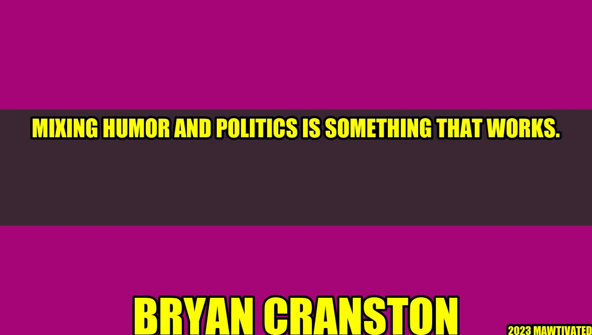

Mixing Humor and Politics: The Secret to Success
An Inspiring Story
It was the year 2008 and the United States of America was in the middle of one of the most fiercely contested Presidential races in its history. Barack Obama, a relatively unknown senator from Illinois, was up against seasoned campaigner John McCain for the top job in the land.
As the campaign heated up, a young actor by the name of Bryan Cranston was asked to host an event for the Obama campaign in New Mexico, a state that was seen as crucial to winning the election. Cranston, who was best known at the time for playing a hapless dad on the sitcom Malcolm in the Middle, was nervous about making a political speech.
But he needn't have worried. As he started to deliver his lines, he found an unexpected ally in the audience: laughter. Cranston peppered his speech with jokes and wry asides, poking fun at himself and the political process. And the audience loved it. By the end of the night, Cranston had not only won over the crowd, but helped to secure a crucial victory for Obama in New Mexico.
The Power of Humor
Bryan Cranston's story is a powerful testimony to the power of humor in politics. Mixing humor and politics can be a tricky business, but when it works, it can be a game-changer. Here are some of the reasons why:
- It Breaks Down Barriers: There are few things as divisive as politics. But humor has the power to transcend those divisions, bringing people together and making them laugh. When politicians use humor, they're showing that they're relatable, approachable, and human. It's much harder to demonize someone who's made you laugh.
- It Helps You Stand Out: In an era of constant news and social media, it can be hard to stand out from the crowd. But humor is one of the most effective ways to do just that. When politicians use humor, they create moments that people will remember and talk about long after the event is over.
- It Can Persuade People: Studies have shown that people are more likely to be persuaded by arguments that make them laugh. Humor can help politicians to make their points in a way that's both memorable and persuasive. It can also help them to defuse tense or emotional situations, making it easier for them to get their message across.
Examples of Humor in Politics
Humor has been used in politics for centuries, from the bawdy cartoons of the 18th century to the witty one-liners of modern-day politicians. Here are just a few examples:
- Abraham Lincoln: Lincoln was known for his folksy wit and sly sense of humor. During one Senate debate, after his opponent had accused him of being two-faced, Lincoln responded, "If I had two faces, do you think this would be the one I was wearing?"
- Barack Obama: Obama is one of the most skilled humorists to ever occupy the White House. From his memorable appearances on late-night talk shows to his hilarious speeches at the White House Correspondents' Dinner, Obama used humor to great effect throughout his presidency.
- Donald Trump: Say what you will about Trump, but there's no denying that he has a knack for making people laugh (even if they're often laughing at him). Trump's tweets are a masterclass in political humor, with their use of sarcasm, exaggeration, and insults.
Conclusion
In conclusion, mixing humor and politics is a powerful tool that can help politicians to connect with voters, break down barriers, and persuade people to their point of view. If you're a politician looking to use humor in your campaign, here are three practical tips:
- Know Your Audience: Humor is highly contextual, so make sure you tailor your jokes to your audience. What works in a smoky bar may not work in a church basement.
- Don't Overdo It: Like any tool, humor can be overused. Use it sparingly and strategically, and make sure it doesn't overshadow your message.
- Be Genuine: Finally, make sure your humor comes from a genuine place. Don't try to be something you're not, or people will see right through you.
Hashtags
#HumorInPolitics #BryanCranston #BarackObama #DonaldTrump #PoliticalHumor
SEO Keywords
Humor in politics, political humor, Bryan Cranston, Barack Obama, Donald Trump, using humor in campaigns
Article Category
Politics
Curated by Team Akash.Mittal.Blog
Share on Twitter Share on LinkedIn